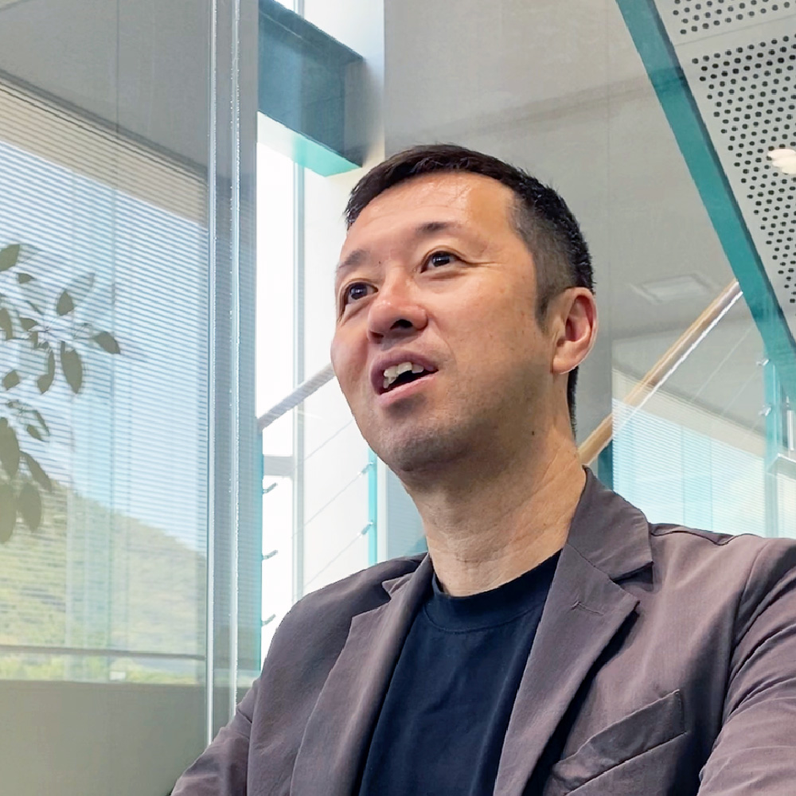

もっと働きやすい会社へ。
本社
2015年入社（中途）
総務・経理・人事
M.Iさん

インタビュー
仕事内容
総務・経理・人事の業務を担当している
中途で入社してから現在まで、総務・経理・人事の業務を担当している。
入社の経緯や決め手
人生一度きり
だから挑戦した
入社のきっかけは、前専務とのつながりだった。前職がかなり厳しい環境だったため転職を考えていたところ、声をかけていただいた。
当時は三和について何も知らなかった。また、前職では営業職だったため、自分も営業課に配属されると思っていたが、実際は総務・経理への配属だった。
それまで経験したことのない仕事だったため迷いもあったが、「人生は一度きりだから挑戦してみよう」と考え、入社を決めた。入社前の1か月間は、簿記の勉強を独学で行い、少しでも知識を身につけようと努力した。
入社前に感じた印象と入社後のギャップ
前職と全てが違って戸惑ったが
そういった気付きが大切にされている
前職はIT業界の最先端に近い環境だったため、入社後はデータのやり取りが紙中心で行われていることなどに驚いた。「少し遅れている部分もあるのではないか」と感じることも多かった。
また、営業職から総務・経理への転換に加え、業界自体も全く異なっていたため、さまざまな違和感があった。これまでは外に出てお客様と直接関わる仕事だったが、現在は社内での業務が中心となっていることも大きな違いだった。
伝統を重んじる会社である一方で、時代に合わなくなっている部分があるのではないかと感じることもある。ただ、それは強い不満というわけではなく、「もっと良くできる部分があるのではないか」という程度の違和感である。
だからこそ、自分は総務や人事という立場から、そのような部分を少しずつ変えていきたいと考えている。
仕事のおもしろさややりがい
会社を変える、
その一歩を支える
会社を変えていけることにやりがいを感じている。
例えば服装のルールを見直したり、社員が居心地良く働ける環境づくりを進めたりすることもその一つである。一方で、自分の仕事は制度を作ることだけではなく、人と人とのつながりを上手く保つことでもある。そのため、人間関係のバランスを取りながら進めていくことに難しさも感じている。
自分自身のためというよりも、人と人とのつながりを支えることが自分の役割であり、中間管理職としての仕事だと思っている。
働き方について
育てる力が、
会社を強くする
現在はOJT制度の組み直しに取り組んでいる。
営業として成果を上げた人は、将来的に管理職になる可能性が高い。しかし、これまでは管理職としての考え方や、教える立場としてのスキルを学ぶ機会が十分ではなかった。
そのため、営業職の段階から後を指導する経験を積み、教える側としても成長してほしいと考えている。良い営業社員に後輩をつけることで、後輩が優秀な右腕になるだけでなく、中堅社員自身も教える立場として成長することができる。
また、新人が独り立ちした後も中堅社員が支え続けられる仕組みを作りたいと考えている。そのような環境で育った新人が、次の世代の新人をより良い方法で育てていく。誰か一人に任せるのではなく、全員が育成に関われる組織を目指している。
三和として教え方のスタンダードを作り、そのOJTも毎年改善していきたい。最終的には新人や中堅社員を育て、会社全体として成長していくことを目指している。
自分自身は総務や経理の仕事を担当しているが、建材業界の営業職は家づくりに携わることができる魅力的な仕事だと思っている。
社風について
自立しながら、
支え合える仲間がいる
三和は居心地の良い会社だと感じている。
社員の人柄はとても良いが、必要以上に干渉しすぎることはない。それぞれが自立している部分もあり、良い意味で一匹狼のような雰囲気もある。
また、「誰かのためになりたい」「仲間を助けたい」という思いを持っている社員は多いと感じている。ただ、その気持ちを表現するのが少し不得意で、不器用な人も多い。
営業職という仕事柄、一人で行動することが多いため、「助けてあげたい気持ちはあるけれど、どう接したら良いか分からない」と考えている人もいるように感じる。
しかし、実際に話してみると良い人ばかりである。そのため、採用活動でも最終的にはスキルや経験よりも、その人の人となりを重視している。
学生時代の経験で現在活かされていること
人との関わりが、
今の仕事に活きている
大学時代にはサッカーサークルに所属し、代表も2年間務めた。サークル活動では、人間関係について多くを学ぶことができた。先輩・同期・後輩がいる中で、なるべく多くの人が満足できる運営をする経験ができたことは社会人になっても生きていると感じる。
チームには自分と仲の良い人間だけではなく、自分と考え方、性格が合わない人もいる。自分と合わない人との付き合い方を経験することは大切だと思う。その経験は社会人になってからも活きてくる。
就活生へのアドバイス
大切なのは、
基本と誠実さ
面接官の立場として感じるのは、細かいところまで気を配れることの大切さである。面接では、入室した瞬間の第一印象である程度決まる部分もある。
そのため、服装や挨拶、清潔感といった基本的なことを大切にしてほしい。特別に背伸びをする必要はないが、髪型や身だしなみなど、基本的な部分に気を遣えているかは見ている。
今後のビジョンやキャリアプラン
働く楽しさを、
もっと多くの人へ
役職としてよりも、個人として、みんなが働きやすい会社にすることが目標である。
「この会社に入って良かった」「働いていて楽しい」と思ってもらえる会社になるよう、自分にできることを続けていきたいと考えている。
山口県の魅力
自然も都会も、
ちょうどいい距離感
山口県は車があればどこへでも行くことができる。物価や駐車場代も比較的安く、暮らしやすい環境だと感じている。
空港の駐車場が無料であることも魅力の一つである。平日は落ち着いた環境で暮らしながら、休日には広島や福岡へ気軽に遊びに行くこともできる。福岡へは新幹線で約30分で行くことができるため、普段は自然豊かな場所で暮らしつつ、近くに都会も欲しいという人にはぴったりだと思う。
就活生へのメッセージ
成長も挑戦もできる環境
社長になりたい人や、将来的に会社を引っ張る存在になりたい人には向いている会社だと思う。絶対に良い会社なのでおすすめしたい。
タイムスケジュール
営業マンの1日
| 08:00 | 出社＆朝礼 |
|---|---|
| 10:00 | 現場確認 |
| 11:00 | 配送段取り |
| 12:00 | 昼食 |
| 13:00 | 資材の訪問提案 |
| 15:00 | 見積作成 |
| 17:00 | 退社 |
経営管理課 課長の普通の1日
| 08:00 | 出社＆メールチェック |
|---|---|
| 10:00 | 伝票＆各書類チェック |
| 12:00 | 昼食 |
| 13:00 | 来客対応 |
| 15:00 | 各種打ち合わせ |
| 17:00 | 退社 |
経営管理課 課長のアクティブな1日
| 08:00 | 出社＆メールチェック |
|---|---|
| 10:00 | 銀行訪問 |
| 11:00 | 顧問会計事務所で打ち合わせ |
| 12:00 | 昼食 |
| 13:00 | リクルート対応 |
| 15:00 | 社内打ち合わせ |
| 17:00 | 退社 |